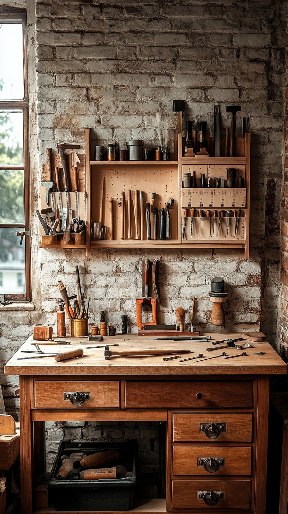

Small calculators for the workshop.
How much lumber you're buying, and what it will cost.
bfc.scottstools.com
How much shellac to dissolve in the alcohol you have.
shellac.scottstools.com
Metric to imperial and back again, in decimals and fractions.
units.scottstools.com